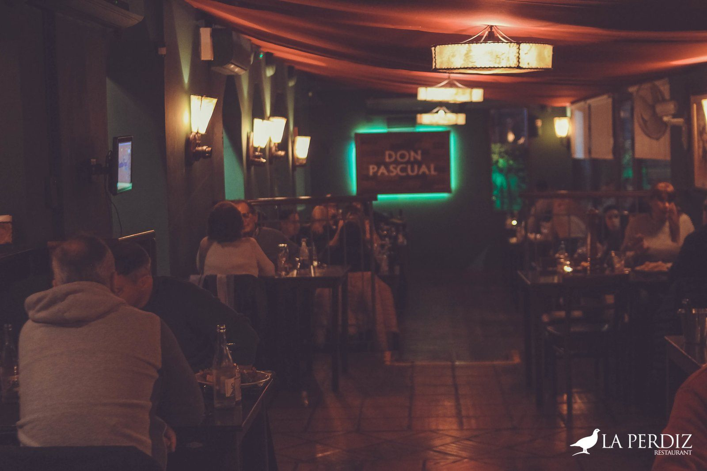
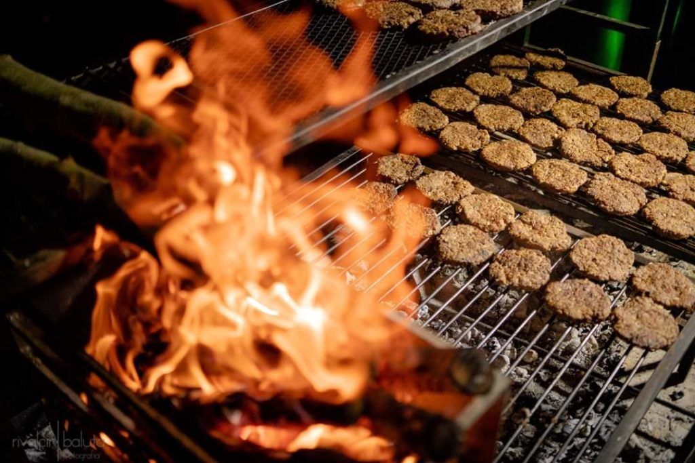
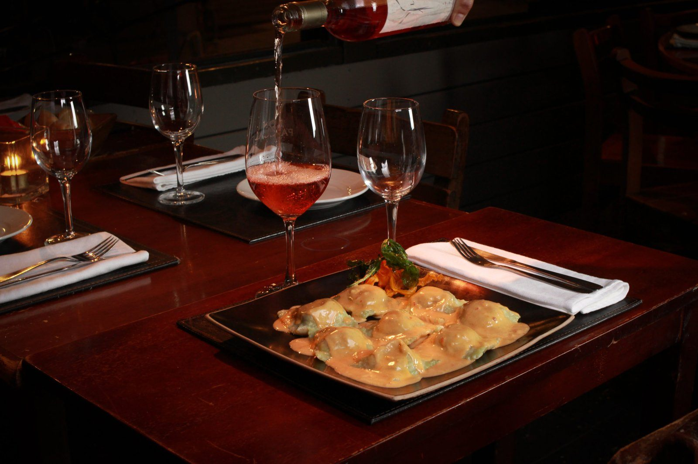
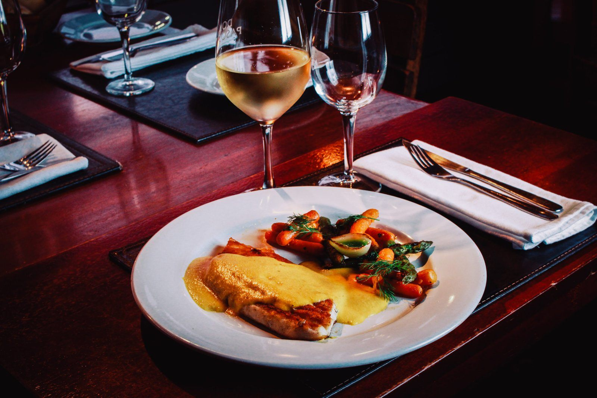
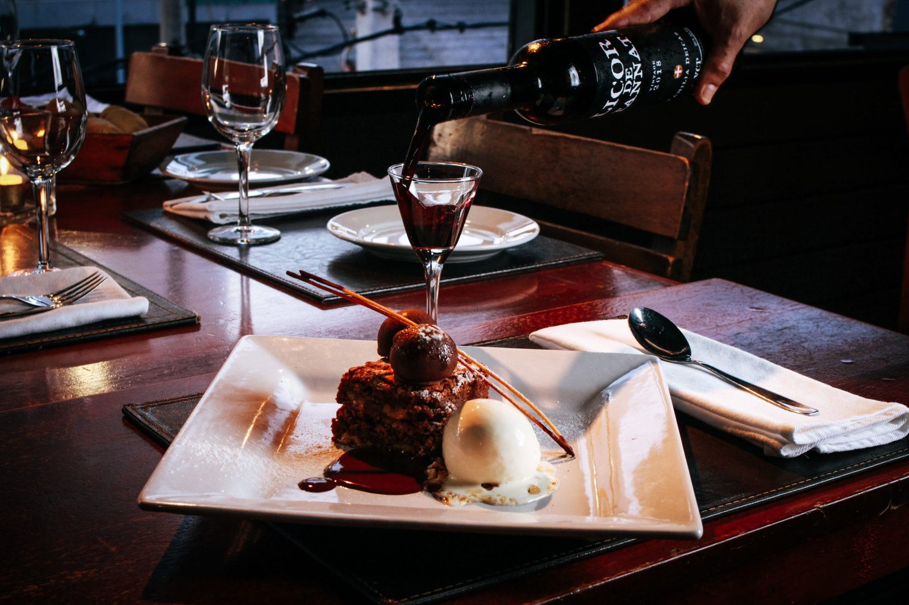
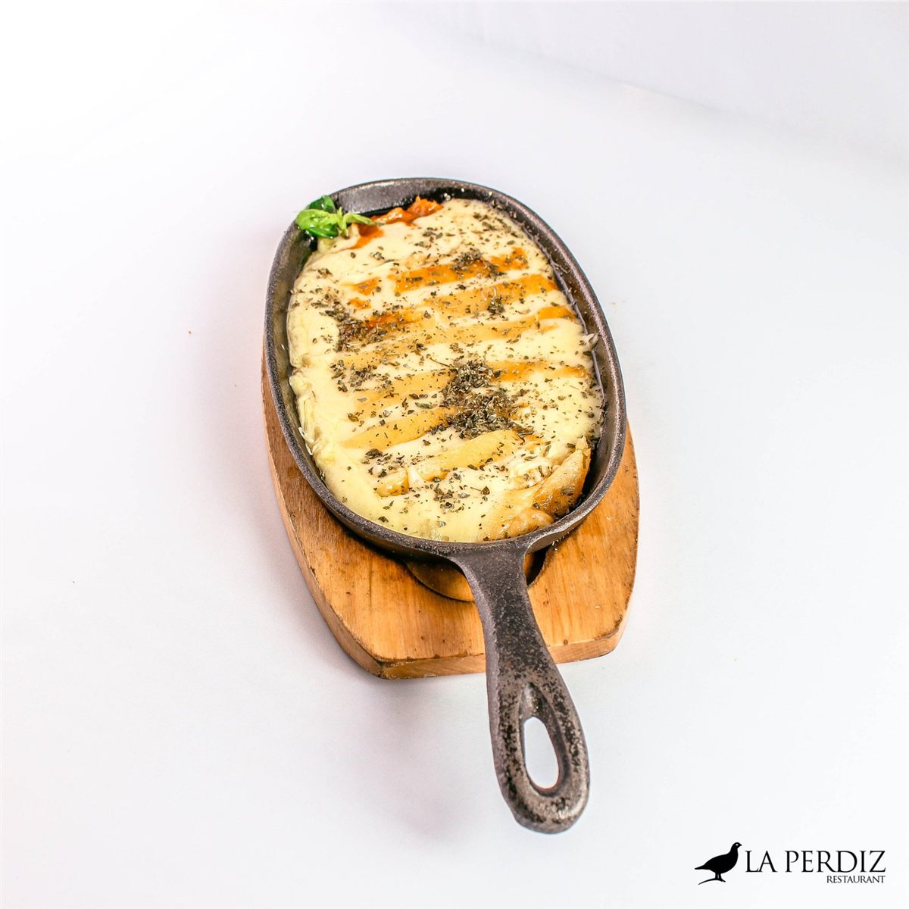
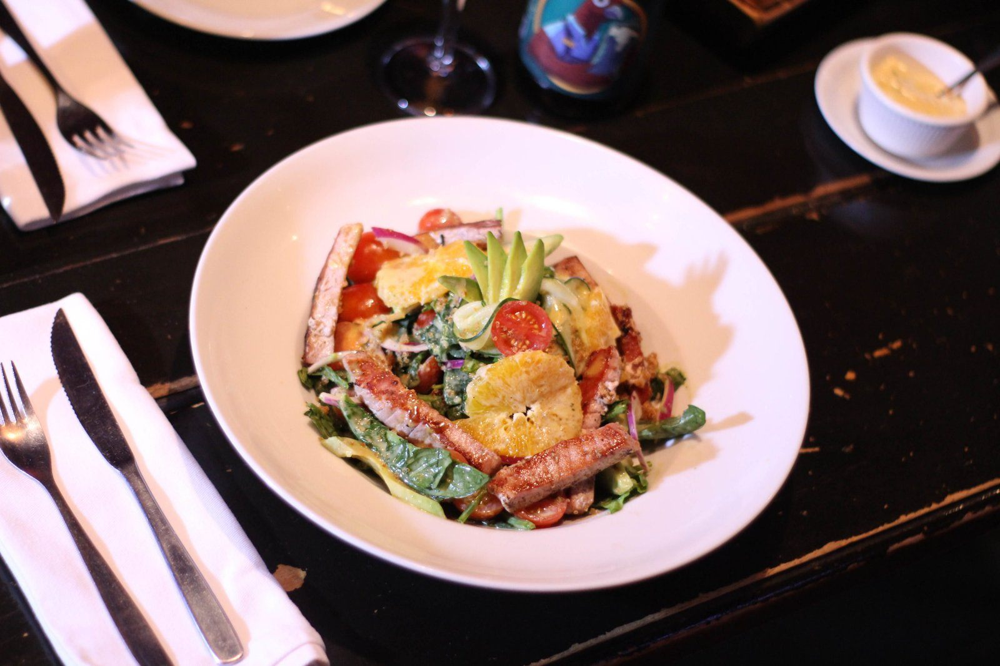
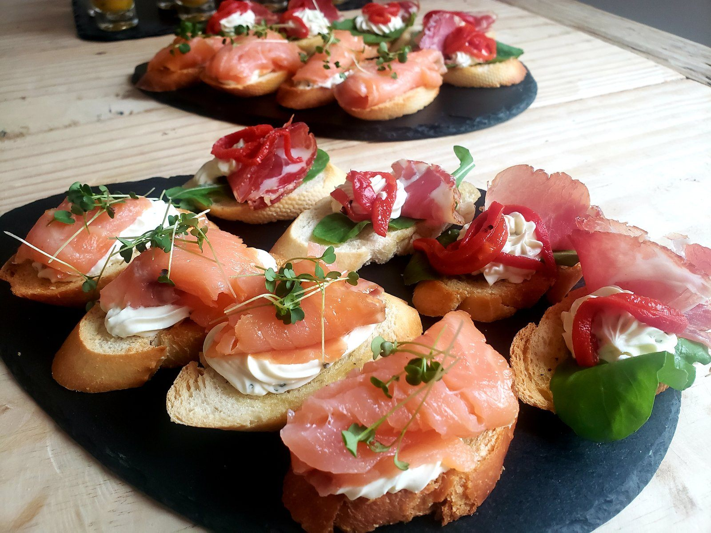
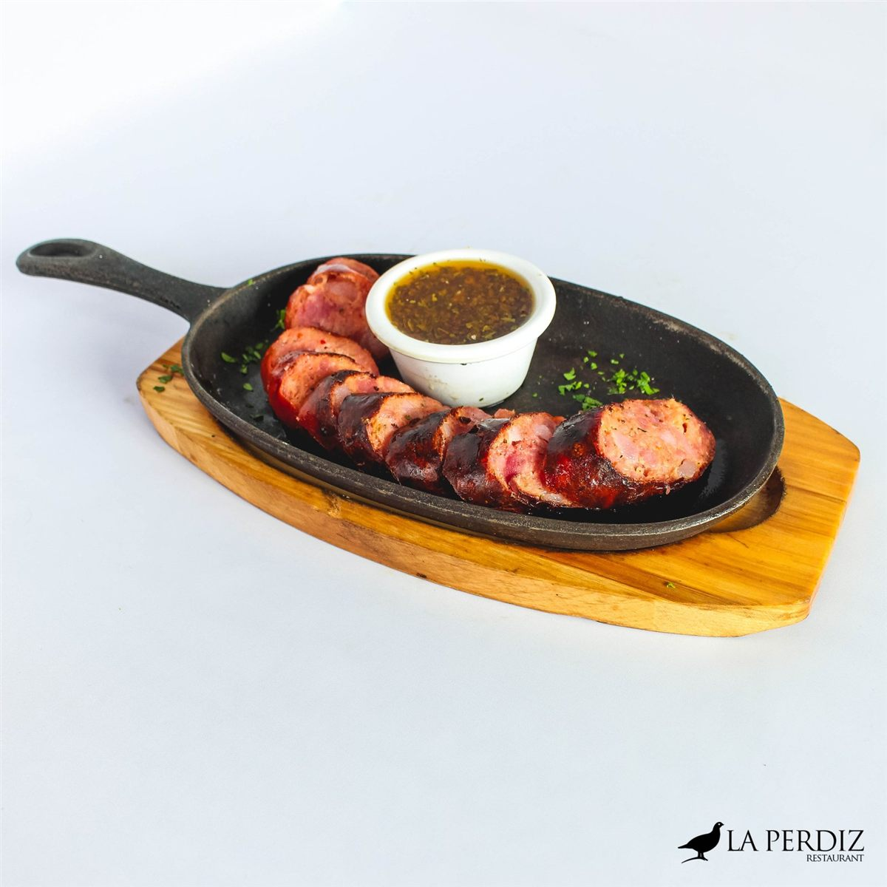
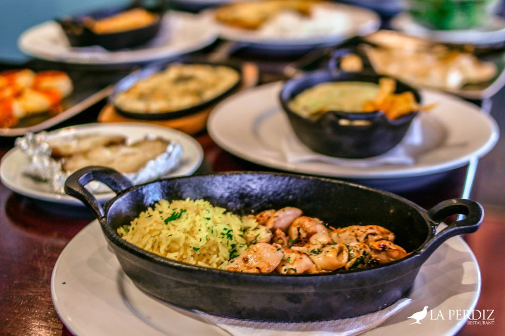

Montevideo Punta Carretas
Guipúzcoa 350, Punta Carretas, Montevideo
Todos los días, mediodía y noche
Cómo llegarPunta Carretas · Montevideo · Desde 2000
Cocina uruguaya con buen servicio y precios justos. Más de veinte años llenando mesas en Punta Carretas.
Bienvenidos
La Perdiz nace a principios del año 2000 como un desafío de su propietario. Después de estudiar y trabajar diez años fuera del país, volvió convencido de que se puede dar un gran servicio y mejor calidad sin dañar el bolsillo del cliente.
Hoy somos un equipo de personas increíbles que se esfuerza todos los días por construir una deliciosa cocina uruguaya: carnes a la leña, pastas caseras, pescados y mariscos.
Nuestra historia
De nuestra cocina

Asado de tira, vacío, entrecot, bife ancho, picaña y achuras, a punto como te gusta.
Ver en la carta
Raviolones, sorrentinos y lasagnas hechos en casa, con la salsa que elijas.
Ver en la carta
Salmón fresco, merluza negra, langostinos y la pesca del día en seis preparaciones.
Ver en la carta
Flan con dulce de leche, Chocolate Turtle, parfait de menta y la Copa La Perdiz.
Ver en la carta«La mejor red social es una mesa llena de buena comida, rodeada de las personas que querés.»
Conocé la carta completa




Lo que dicen de nosotros
“Muy buen lugar para comer carne. La atención excepcional, siempre muy atentos: al preguntarnos el punto de la carne incluso nos ofrecieron dejar la mitad al punto que cada uno quería.”
“Pedí ravioles caseros rellenos de salmón con salsa de caviar negro y fue la mejor pasta que he comido. De postre, un parfait de menta delicioso y copa La Perdiz.”
“Pedimos dos vacíos, un boniato al plomo y una ensalada para tres personas y quedamos súper satisfechos. Los mozos son muy atentos y amables. ¡Muy linda experiencia!”
Dos casas
Guipúzcoa 350, Punta Carretas, Montevideo
Todos los días, mediodía y noche
Cómo llegarAv. Sepé 51, Siñeriz Shopping, Rivera
Todos los días, mediodía y noche
Cómo llegar
Las reservas se toman únicamente por teléfono. Te esperamos al mediodía y a la noche, todos los días.